This document describes graphics data specifications for communication icons used on the CTR HOME Menu. The following icon patterns, indicating the four communication modes, may be used for the communication icon. The following sections describe cautions and how to use communication icons in each communication mode.
Table 1-1 Communication Icons in the Different Communication Modes
| Types of Reception Strength Icons | StreetPass | ||
|---|---|---|---|
| Internet (including NintendoZone) |
Local Communications | ||
| Level 1 | 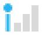 |
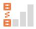 |
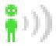 |
| Level 2 | 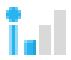 |
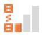 |
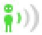 |
| Level 3 | 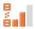 |
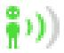 |
|
| Level 4 | 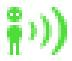 |
||
With the CTR, you can return to the HOME Menu any time while an application is running. Because you can check the reception mode and reception strength on the HOME Menu, applications are not required to display communication icons. If you are displaying communication icons for an application, you are not required to use the communication icons supplied with CTR-SDK. As such, there is no problem creating your own communication icons to match the look and feel of your application. There is no problem with not displaying communication icons depending on software attributes.
If you use the communication icons supplied in CTR-SDK with an application, be sure to implement them so that their behavior is the same as the communication icons found on the HOME Menu. Otherwise, the user may become confused as to why the behavior of icons within the application differs from that of icons on the HOME Menu even though they appear to be identical. Make sure that operations are consistent to avoid such confusion. For more information, see the display of each icon described later and the functions related to their display.
The reception strength icons indicate both the current communication mode and signal status.
Use the following four icons when performing communications in infrastructure mode (Internet communications). These icons are also used when communicating with Nintendo Zone.
Figure 3-1 Icons for Internet Communication
Each icon shows one of four possible signal strengths. Icons to the right indicate better signal strength. In your implementation, change the icon displayed according to the value returned by the nn::ac::CTR::GetLinkLevel function.
Value Returned by the nn::ac::CTR::GetLinkLevel Function |
Icon |
|---|---|
LINK_LEVEL_0 |
|
LINK_LEVEL_1 |
|
LINK_LEVEL_2 |
|
LINK_LEVEL_3 |
Use the following icons during UDS communication.
Figure 3-2 Local communication icon
Each icon shows one of four possible signal strengths. Icons to the right indicate better signal strength. In your implementation, change the icon displayed according to the value returned by the nn::uds::CTR::GetLinkLevel function in the same way as for Internet communication.
The StreetPass icons are used in the HOME Menu to indicate that StreetPass communication is enabled.
Unlike the reception strength icons described previously, these icons do not indicate signal strength. These icons are used to indicate that StreetPass communication is enabled.
The application cannot determine whether StreetPass communication is currently taking place or explicitly direct StreetPass communication to begin. Accordingly, the application cannot use these icons to indicate the status of StreetPass communication.
Figure 4-1 Icons for StreetPass Communication
Use a loop animation made up of the four patterns above when displaying this information. Display them in a loop that repeats in the order of 0 bars, 1 bar, 2 bars, and then 3 bars every 60 f (1 sec).
These icons are used to indicate the status of wireless feature on the CTR system. One indicates that the wireless feature is switched off, while the other indicates that it is switched on, but that communications are not taking place in any of the three modes (Internet, StreetPass, or Local Communication).
The application cannot determine in real time whether wireless is on or off. Accordingly, these icons do not need to be displayed. However, if the ac library or the uds library returns an error indicating that wireless is off, stop displaying the Reception Strength icons.
Figure 5-1 Wireless Switch On/Off Icons
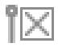
Signal status is not indicated in this mode.
Distributed communication icon data is provided in PSD format. Convert this data to the format best suited for your application development environment. The image data file is located in the following directory in the CTR-SDK.
$CTR_SDK/resources/icon/ConnectionIcon
The layer configuration of PSD files is as follows. The Dummy layer does not need to be output.
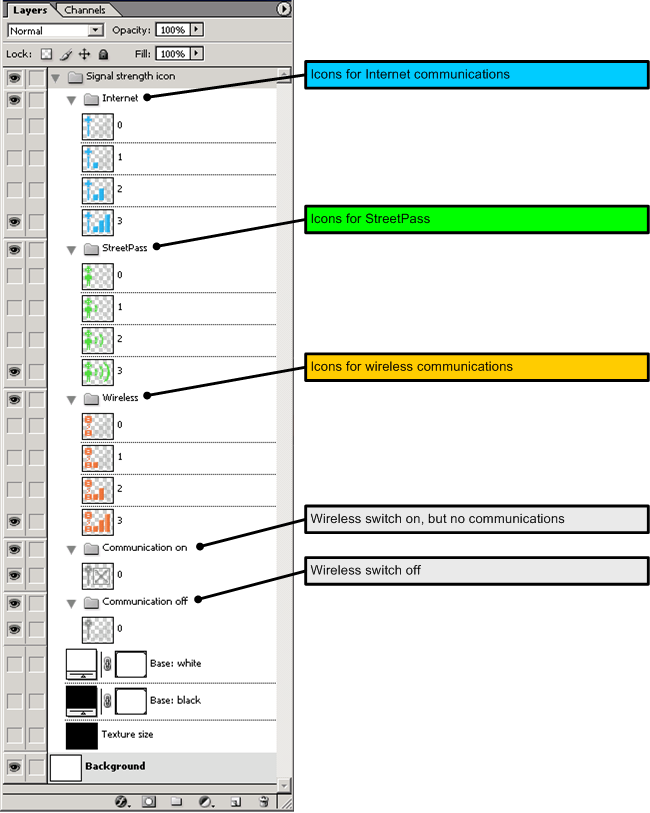
Icons cannot be modified. Do not switch to the use of original colors or make changes to the pattern.
There is no problem with adding a mask to the icon background for the purpose of increasing icon visibility. There are no specifications or restrictions on the design of this mask.
CONFIDENTIAL